library(phwstyle)
library(ggplot2)
library(dplyr)
use_phw_ggplot()
set.seed(1)
cases <- tibble(
onset = as.Date("2025-01-06") + round(rgamma(400, 5, 0.12)),
age_group = sample(c("0-14", "15-44", "45-64", "65+"), 400, replace = TRUE),
sex = sample(c("Female", "Male"), 400, replace = TRUE),
setting = sample(c("Setting 1", "Setting 2", "Setting 3"), 400, replace = TRUE, prob = c(0.6, 0.15, 0.25)),
organism = sample(c("Type 1", "Type 2", "Type 3"), 400, replace = TRUE)
)All data on this page is made up.
This page shows the ggplot2 helpers and the ready-made public health charts, each with code you can copy.
Setting the style
use_phw_ggplot() sets theme_phw(), the PHW
colours for groups and numbers, and navy for layers with no colour of
their own, for every plot in the session. It styles extension geoms too.
Everything below is plain ggplot2. A theme or scale is added to a plot
only to change something. The getting started
guide lists what is covered and what you still need to add.
theme_phw() takes the settings you most often change.
grid picks the gridlines, legend moves or
removes the legend, and accessible = TRUE makes text larger
and lines thicker for one plot.
cases |>
count(setting) |>
ggplot(aes(n, reorder(setting, n))) +
geom_col(width = 0.7) +
labs(title = "Cases by setting", x = "Cases", y = NULL) +
theme_phw(grid = "x", legend = "none", accessible = TRUE)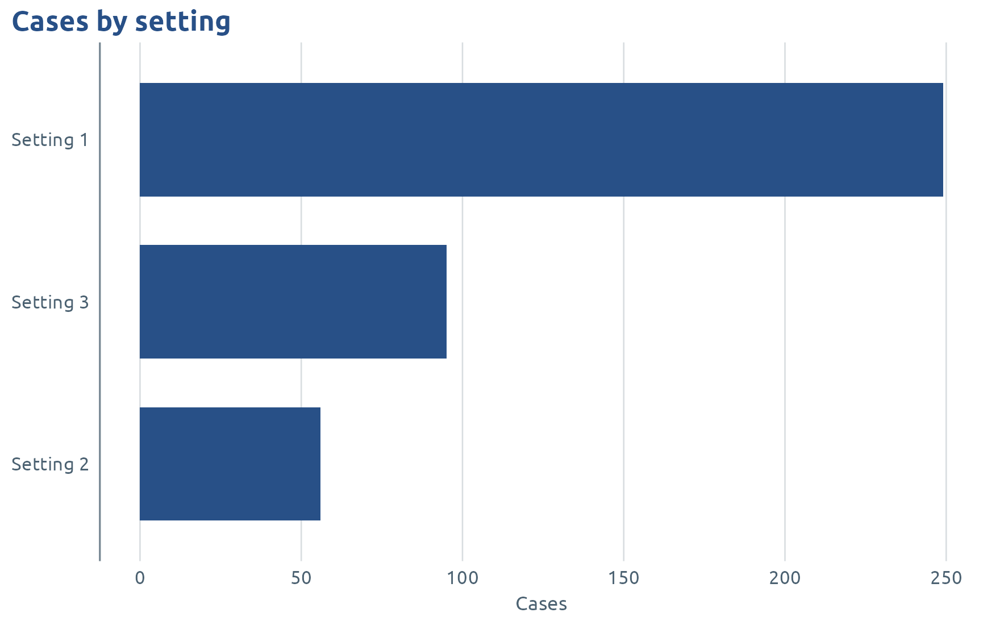
Colour scales
A discrete scale colours groups from the main palette,
then carries on into extended. Give it a key
and each group keeps its colour in every chart. Colours and
accessibility covers keys and palettes, and colour-blind safe
colours covers the accessible palette and the shape and
line type scales.
ggplot(cases, aes(age_group, fill = setting)) +
geom_bar() +
scale_fill_phw_d(key = "setting") +
labs(title = "Cases by age group and setting", x = NULL, y = "Cases",
caption = phw_caption("Example data"))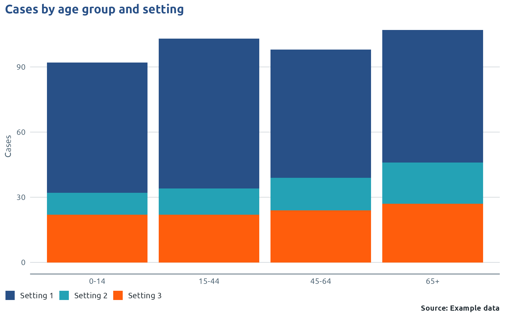
Numbers need a continuous scale. scale_fill_phw_c() and
scale_colour_phw_c() blend a sequential palette such as
blues, teals or greens.
grid <- tidyr::expand_grid(week = 1:6, age_group = c("0-14", "15-44", "45-64", "65+")) |>
mutate(cases = rpois(n(), 10 + 4 * week))
ggplot(grid, aes(week, age_group, fill = cases)) +
geom_tile(colour = "white") +
scale_fill_phw_c(palette = "blues") +
labs(title = "Cases by week and age group", x = "Week", y = NULL, fill = "Cases") +
theme_phw(grid = "none", legend = "right", legend_title = TRUE)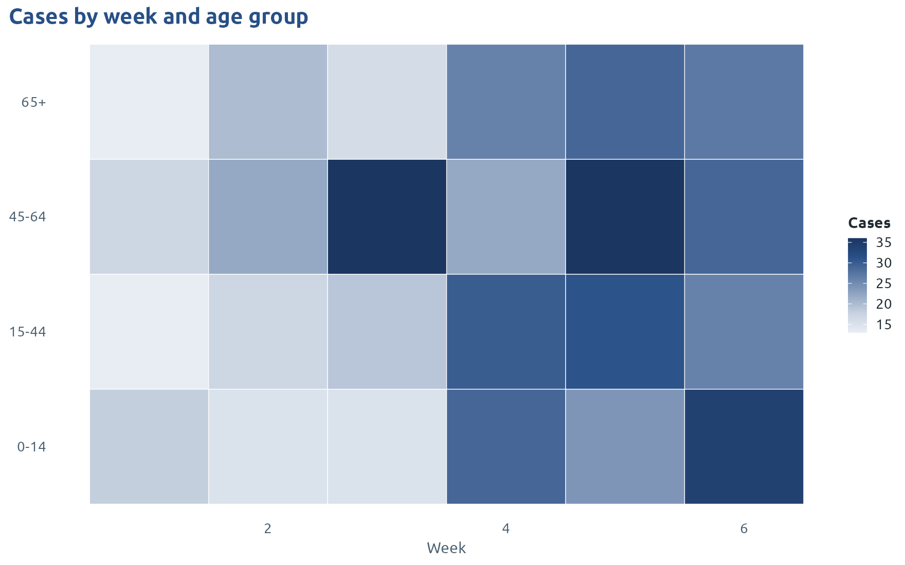
scale_fill_phw_b() and scale_colour_phw_b()
cut the numbers into bins, so each colour stands for a range. This suits
maps and any chart where readers compare bands.
ggplot(grid, aes(week, age_group, fill = cases)) +
geom_tile(colour = "white") +
scale_fill_phw_b(palette = "teals", n.breaks = 5) +
labs(title = "The same counts in bands", x = "Week", y = NULL, fill = "Cases") +
theme_phw(grid = "none", legend = "right", legend_title = TRUE)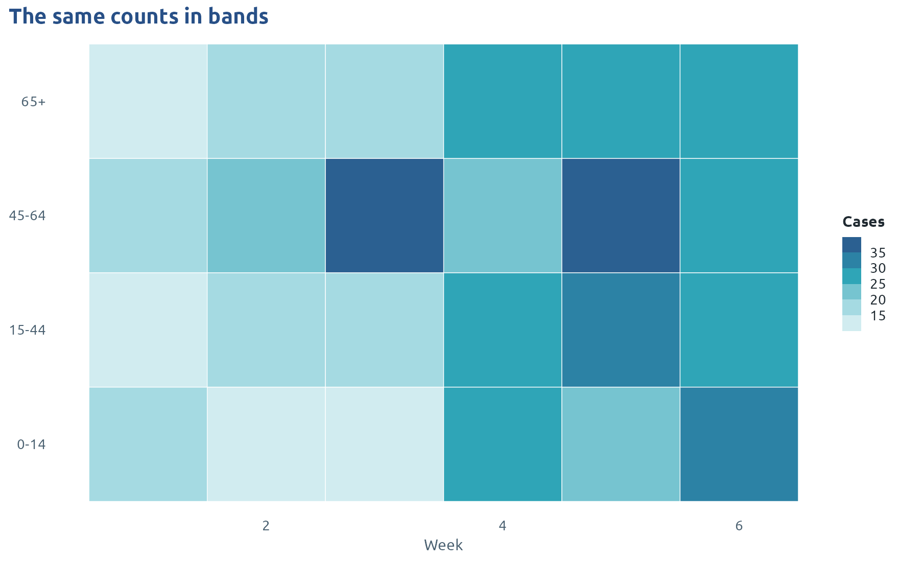
scale_fill_phw_div() and
scale_colour_phw_div() use two colours that meet at a pale
midpoint, 0 unless you set midpoint. They suit
values above and below a reference, such as change from last year.
change <- tibble(area = paste("Area", LETTERS[1:10]), change = round(rnorm(10, 0, 8), 1))
ggplot(change, aes(change, reorder(area, change), fill = change)) +
geom_col(width = 0.7) +
scale_fill_phw_div(guide = "none") +
labs(title = "Change in rate since last year", x = "Percentage points", y = NULL) +
theme_phw(grid = "x")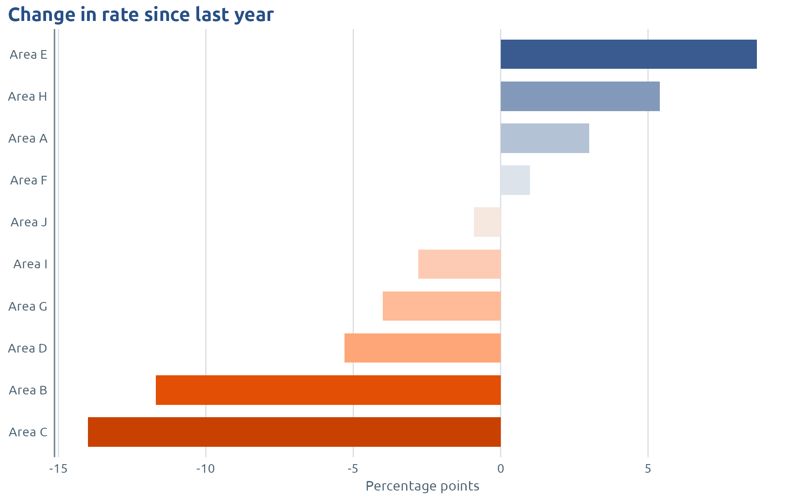
Each scale has a colour version for points and lines,
and a color spelling that is the same function. The top row
of this figure uses the colour spellings and the bottom row
uses color.
pts <- tibble(x = runif(60), y = runif(60), group = sample(c("A", "B", "C"), 60, TRUE),
value = rnorm(60, 0, 10))
dots <- function(colour_aes, title) {
ggplot(pts, aes(x, y, colour = {{ colour_aes }})) +
geom_point(size = 2.5) + labs(title = title, x = NULL, y = NULL) +
theme_phw(legend = "right")
}
phw_arrange(
dots(group, "colour, groups") + scale_colour_phw_d(),
dots(value, "colour, numbers") + scale_colour_phw_c(),
dots(value, "colour, bands") + scale_colour_phw_b(n.breaks = 4),
dots(group, "color, groups") + scale_color_phw_d(),
dots(value, "color, numbers") + scale_color_phw_c(),
dots(value, "color, bands") + scale_color_phw_b(n.breaks = 4),
ncol = 3, guides = "keep"
)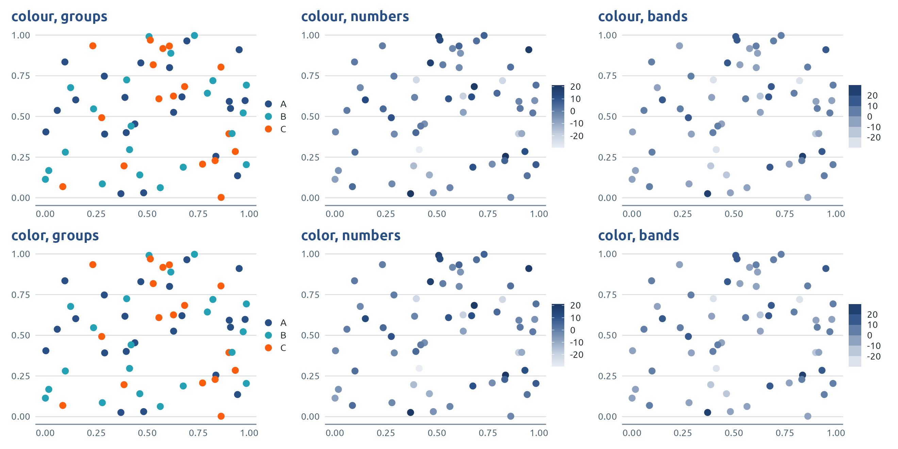
ggplot(pts, aes(x, y, colour = value)) +
geom_point(size = 2.5) +
scale_colour_phw_div() +
labs(title = "Diverging colour scale", x = NULL, y = NULL) +
theme_phw(legend = "right")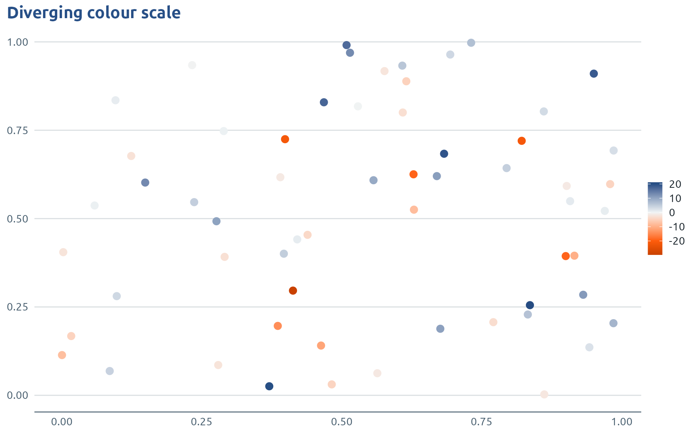
ggplot(pts, aes(x, y, colour = value)) +
geom_point(size = 2.5) +
scale_color_phw_div() +
labs(title = "Same scale, other spelling", x = NULL, y = NULL) +
theme_phw(legend = "right")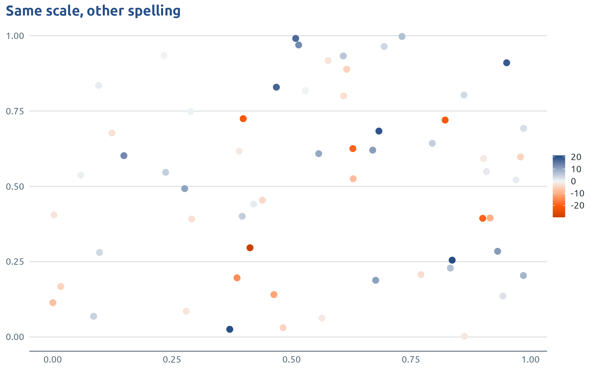
A second measure on its own axis
phw_sec_axis() returns a secondary axis for a second
measure. Its $rescale() function maps that measure onto the
scale of the first axis. Wrap the second measure in
$rescale() and give the same object to
sec.axis. Colouring the secondary axis to match its series
helps readers see which axis belongs to which.
wk <- tibble(week = 1:20) |>
mutate(cases = round(180 * exp(-((week - 9) / 4)^2) + 4),
positivity = 2 + 28 * exp(-((week - 10) / 5)^2))
orange <- phw_col("orange")
sec <- phw_sec_axis(wk$cases, wk$positivity, name = "Positivity (%)")
ggplot(wk, aes(week)) +
geom_col(aes(y = cases), fill = phw_col("navy")) +
geom_line(aes(y = sec$rescale(positivity)), colour = orange, linewidth = 1) +
scale_y_continuous("Cases", sec.axis = sec) +
labs(title = "Cases and positivity by week", x = "Week") +
theme_phw(axis.title.y.right = element_text(colour = orange),
axis.text.y.right = element_text(colour = orange))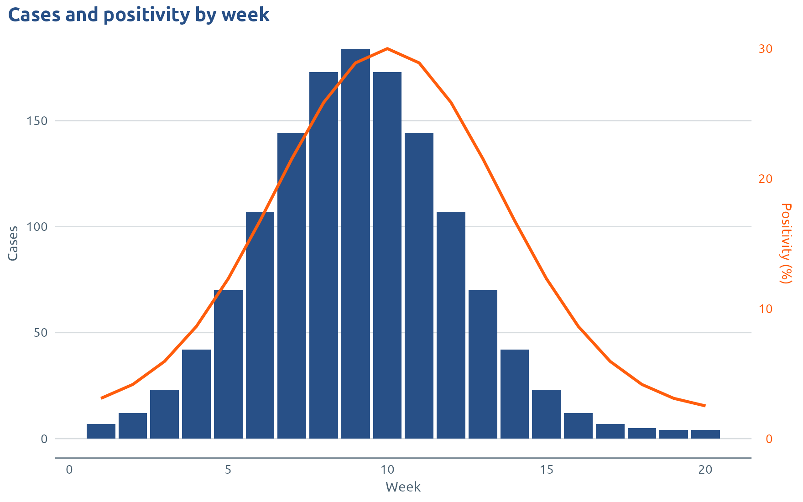
On a log axis, say so with scale = "log" and use
scale_y_log10():
sec <- phw_sec_axis(wk$cases, wk$positivity, name = "Positivity (%)", scale = "log")
ggplot(wk, aes(week)) +
geom_line(aes(y = cases), colour = phw_col("navy")) +
geom_line(aes(y = sec$rescale(positivity)), colour = orange) +
scale_y_log10("Cases", sec.axis = sec) +
labs(title = "The same measures on log axes", x = "Week") +
theme_phw(axis.title.y.right = element_text(colour = orange),
axis.text.y.right = element_text(colour = orange))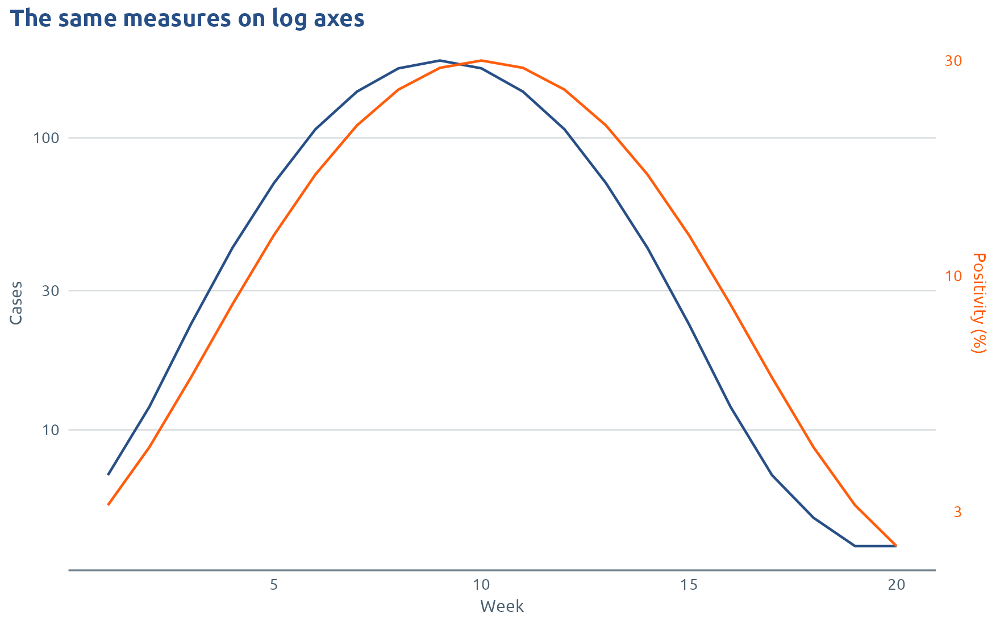
Public health charts
These functions draw a whole chart from your data, in the PHW style.
Each returns a ggplot, so you can add labs(), scales and
themes as usual. The gallery
shows more of them.
Epidemic curve
phw_epicurve() counts events by day, week, month,
quarter or year and draws them as columns, with zero for periods that
have no cases. Give it one row per case, or a count column.
group stacks the columns by a second variable, and
interval changes the period.
phw_epicurve(cases, onset, group = organism) +
labs(title = "Cases by week of onset", x = "Week beginning", y = "Cases")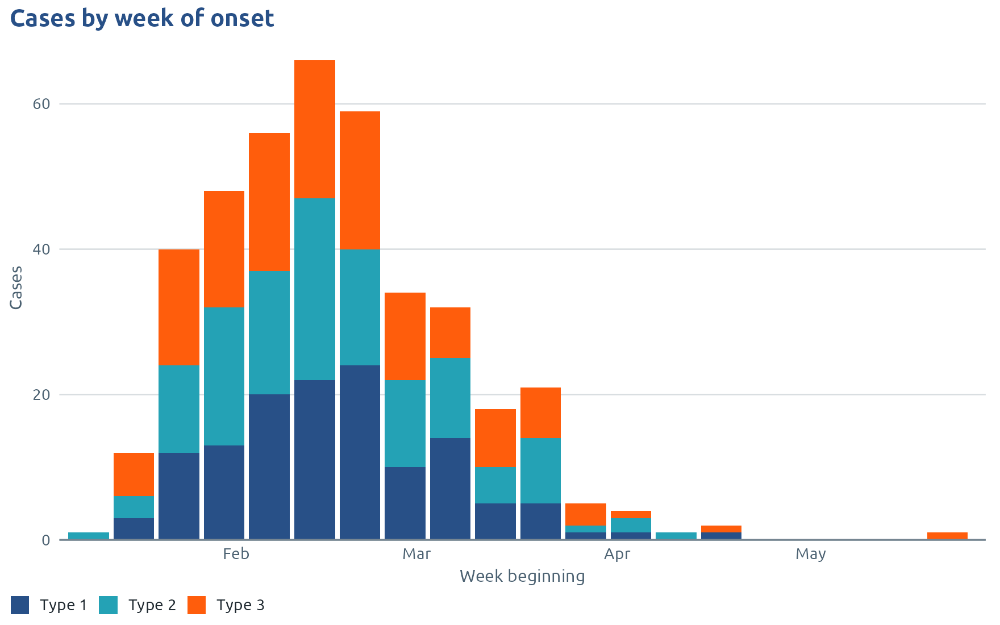
average adds a trailing average of the total count over
that many periods, as a black line with its own legend entry.
average_label replaces the legend text, for example with
your own wording in another language.
phw_epicurve(cases, onset, average = 4) +
labs(title = "Cases by week of onset", x = "Week beginning", y = "Cases")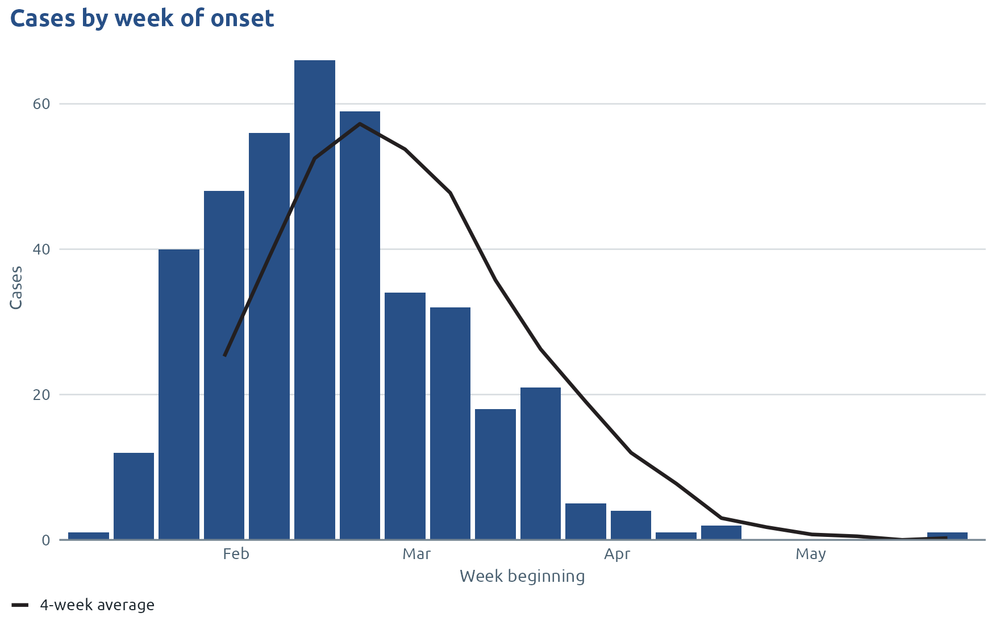
phw_epicurve(cases, onset, average = 4, average_label = "Rolling four-week mean") +
labs(title = "Cases by week of onset", x = "Week beginning", y = "Cases")Population pyramid
phw_pyramid() draws counts by age group on the vertical
axis, with one sex on each side. percent = TRUE shows each
bar as a share of the total, which lets you compare groups of different
sizes. compare draws a second data frame with the same
columns as outlines.
phw_pyramid(cases, age_group, sex, percent = TRUE) +
labs(title = "Cases by age and sex")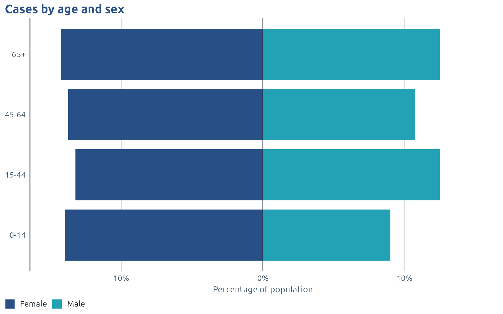
last_year <- cases |> slice_sample(prop = 0.8)
phw_pyramid(cases, age_group, sex, percent = TRUE, compare = last_year) +
labs(title = "Cases by age and sex, with last year outlined")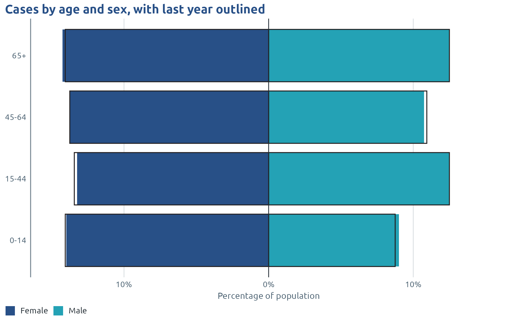
Funnel plot
phw_funnel() plots each unit’s proportion or rate
against its denominator, between control limits that narrow as the
denominator grows. Points outside the limits are coloured and shaped,
and labelled when you give label. The limits are the normal
approximation around the target, which ?phw_funnel
describes.
units <- tibble(area = paste("Area", 1:30), eligible = round(runif(30, 300, 6000))) |>
mutate(events = rbinom(n(), eligible, c(rep(0.72, 28), 0.6, 0.82)))
phw_funnel(units, events, eligible, label = area) +
labs(title = "Proportion by area", x = "Population", y = "Proportion (%)")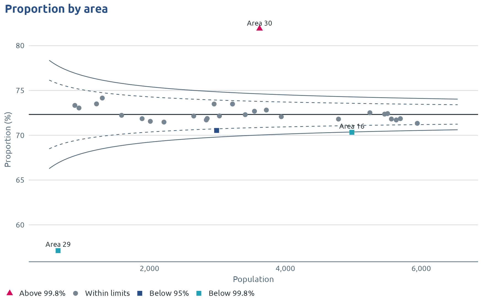
To replace the words in the legend, give labels a named
vector. The names are the default zone text and the values are your
replacements. Each zone keeps its colour and shape. Pass the same names
with your own text, for example in Welsh.
phw_funnel(units, events, eligible, label = area,
labels = c("Within limits" = "Inside the limits")) +
labs(title = "Proportion by area", x = "Population", y = "Proportion (%)")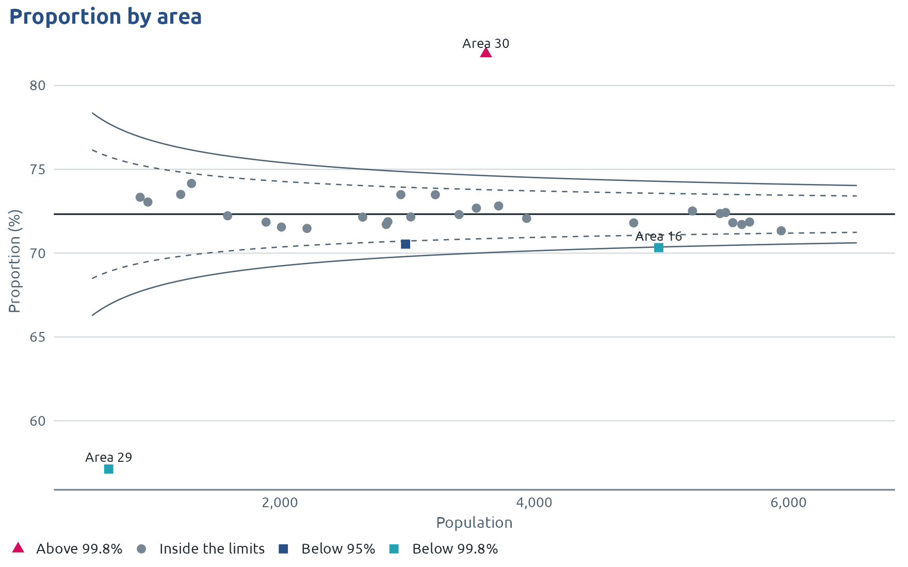
Forest plot
phw_forest() draws estimates and intervals you have
already calculated, one row per unit, sorted by value. The chunk below
makes up the numbers so you can run it. With target, units
whose whole interval lies above or below it are coloured and shaped
Higher or Lower, and the rest Similar.
areas <- tibble(area = paste("Area", LETTERS[1:10]), rate = round(runif(10, 40, 90), 1)) |>
mutate(lower = rate - round(runif(10, 4, 12), 1), upper = rate + round(runif(10, 4, 12), 1))
phw_forest(areas, rate, lower, upper, label = area, target = 65) +
labs(title = "Rate by area", x = "Rate per 100,000",
colour = "Compared with Wales", shape = "Compared with Wales")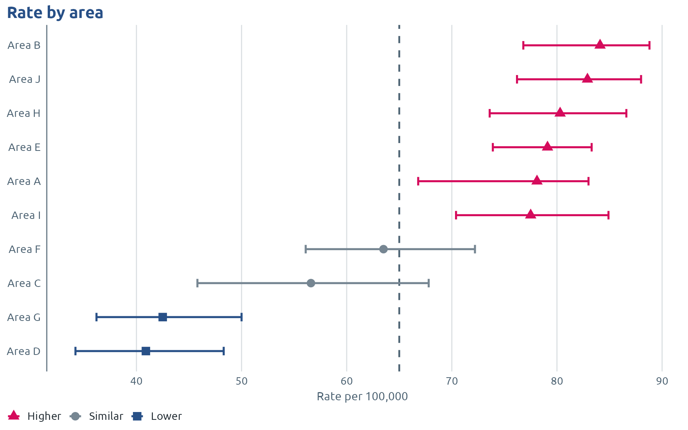
labels renames the three comparison levels. The names
are Higher, Similar and Lower,
and the values are your own text.
phw_forest(areas, rate, lower, upper, label = area, target = 65,
labels = c(Higher = "Above target", Similar = "Close to target",
Lower = "Below target")) +
labs(title = "Rate by area", x = "Rate per 100,000",
colour = "Compared with target", shape = "Compared with target")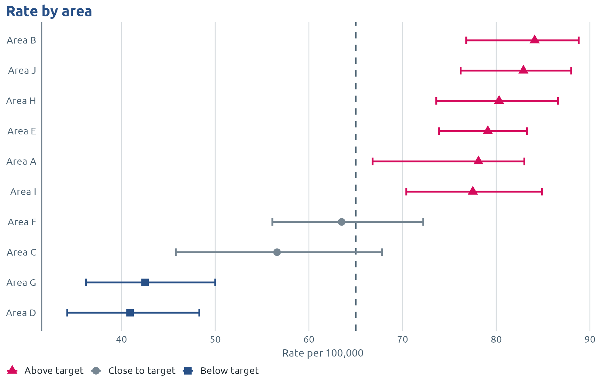
Control chart
phw_spc() draws an XmR chart or, with
type = "run", a run chart. It colours points that show
special cause variation. improvement says which direction
is better, so signals in the good direction are blue and those in the
bad direction are orange. baseline sets how many of the
first points fix the centre line and limits.
monthly <- tibble(month = seq(as.Date("2023-01-01"), by = "month", length.out = 30),
value = c(rnorm(20, 50, 4), rnorm(10, 57, 4)))
phw_spc(monthly, month, value, improvement = "increase", baseline = 20) +
labs(title = "Monthly measure")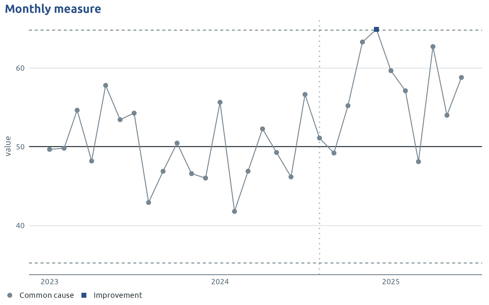
labels works as it does for the funnel plot. The names
are the default signal text and the values replace them.
phw_spc(monthly, month, value, improvement = "increase", baseline = 20,
labels = c("Common cause" = "Within normal variation")) +
labs(title = "Monthly measure")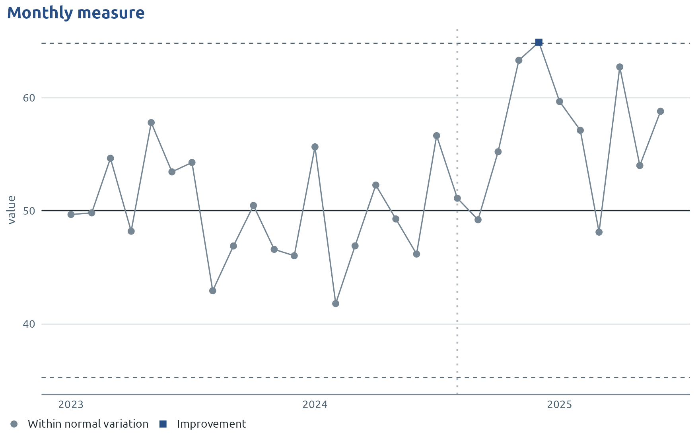
Extension packages
Packages such as ggrepel and ggridges draw geoms with their own
defaults. use_phw_ggplot() styles the ones that are loaded.
If you load a package after calling it, run
phw_style_extensions() again.
library(ggrepel)
phw_style_extensions()
areas |>
mutate(population = round(runif(n(), 20, 200))) |>
ggplot(aes(population, rate, label = area)) +
geom_point(colour = phw_col("navy"), size = 2) +
geom_text_repel() +
labs(title = "Rate by population", x = "Population (thousands)", y = "Rate per 100,000")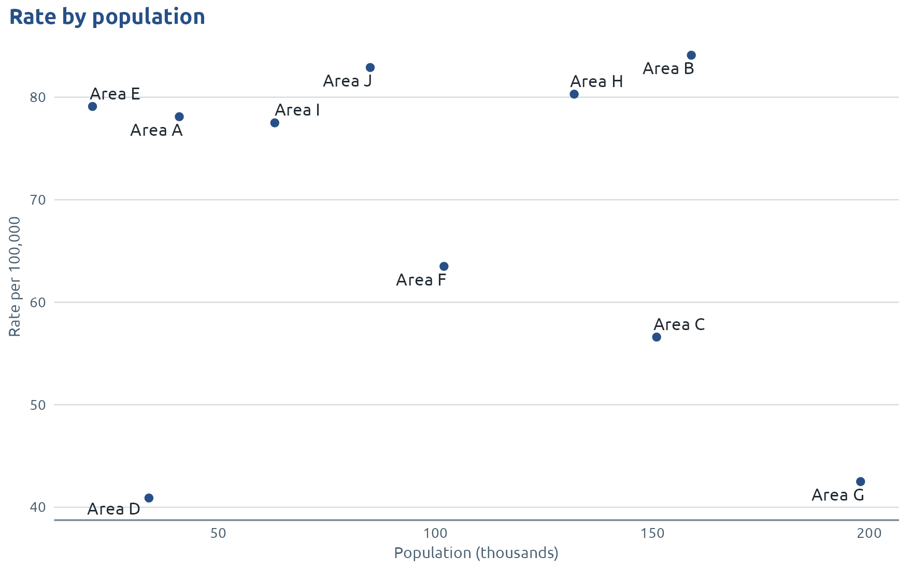
library(ggridges)
phw_style_extensions()
cases |>
mutate(score = rnorm(n(), 50 + 5 * match(age_group, c("0-14", "15-44", "45-64", "65+")), 8)) |>
ggplot(aes(score, age_group, fill = age_group)) +
geom_density_ridges(alpha = 0.85) +
scale_fill_phw_d(guide = "none") +
labs(title = "Distribution of a score by age group", x = "Score", y = NULL)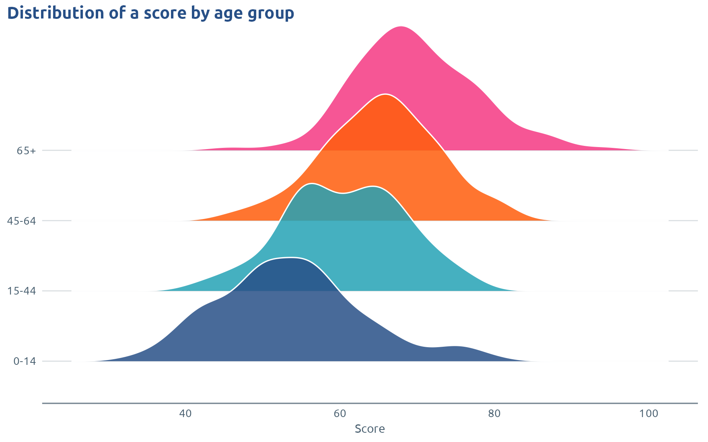
Several charts in one figure
phw_arrange() joins plots with patchwork, adds a title,
a source line and panel tags, and merges identical legends into one.
a <- ggplot(cases, aes(y = setting)) + geom_bar() + labs(x = "Cases", y = NULL)
b <- phw_epicurve(cases, onset, interval = "month") + labs(y = "Cases")
phw_arrange(a, b, widths = c(1, 2), title = "Two charts, one title", source = "Example data",
tag_levels = "A")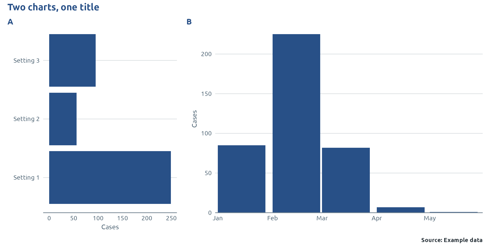
If you build the figure with gridExtra instead,
phw_title_grob() makes a title in the same style to put
above it.
panel <- gridExtra::arrangeGrob(a, b, ncol = 2, widths = c(1, 2))
fig <- gridExtra::arrangeGrob(
phw_title_grob("Two charts, one title", "Joined with gridExtra"),
panel, heights = c(1, 8)
)
grid::grid.newpage()
grid::grid.draw(fig)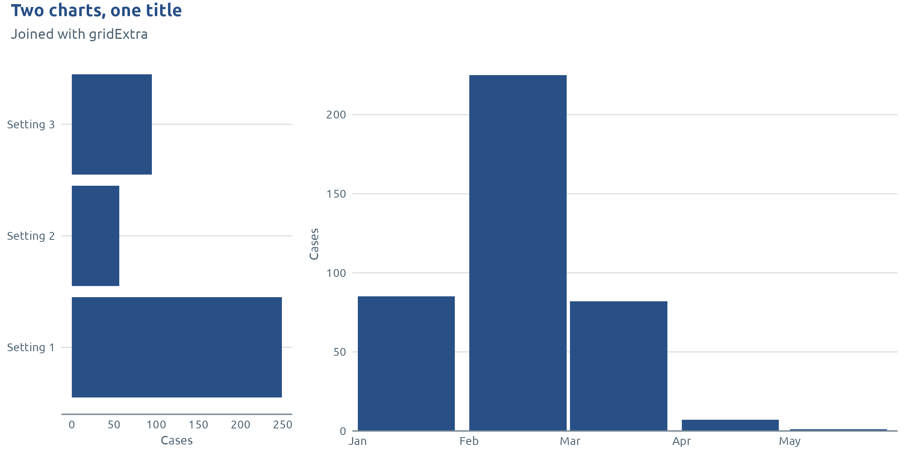
Source lines, dates and numbers
phw_caption() builds the source line for
labs(caption = ). Add a date and it writes “Data correct as
of” and the date. The words in front of the source and the date are
arguments, so you can replace them with your own text. Use
sep = " | " for a single line.
phw_caption("Example data", date = as.Date("2026-11-03"))
#> [1] "Source: Example data\nData correct as of 03/11/2026"
phw_caption("Example data", date = as.Date("2026-11-03"),
source_prefix = "Data: ", date_prefix = "As of ", sep = " | ")
#> [1] "Data: Example data | As of 03/11/2026"phw_date() formats a date as dd/mm/yyyy, or in words
with style = "long", or with any format()
string. phw_number() and phw_percent() return
labelling functions for axes. They take the arguments of
scales::label_number() and
scales::label_percent().
phw_date(as.Date("2026-11-03"))
#> [1] "03/11/2026"
phw_date(as.Date("2026-11-03"), "long")
#> [1] "3 November 2026"
phw_number()(c(1200, 45000, 1250000))
#> [1] "1,200" "45,000" "1,250,000"
phw_percent()(c(0.052, 0.4, 0.875))
#> [1] "5.2%" "40.0%" "87.5%"
age_totals <- cases |>
count(age_group) |>
mutate(cases = n * 100, share = n / sum(n))
a1 <- ggplot(age_totals, aes(age_group, cases)) +
geom_col(width = 0.7) +
scale_y_continuous(labels = phw_number()) +
labs(title = "Cases", x = NULL, y = NULL)
a2 <- ggplot(age_totals, aes(age_group, share)) +
geom_col(width = 0.7) +
scale_y_continuous(labels = phw_percent(accuracy = 1)) +
labs(title = "Share of cases", x = NULL, y = NULL)
phw_arrange(a1, a2, source = "Example data")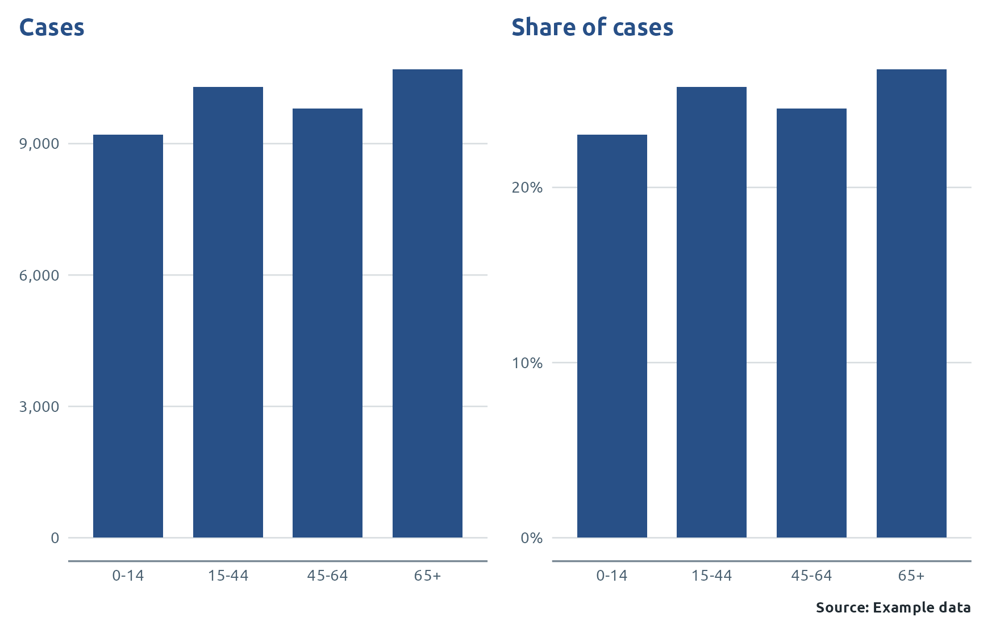
Finishing and saving
phw_finalise() adds a rule, the logo, the source and the
date under a chart (or a patchwork, or any grob). The logo appears once
you have downloaded the logos, which Installation and setup explains.
phw_save() saves the result with the bundled font.
phw_finalise() passes source_prefix and
date_prefix on to phw_caption(), so you can
replace those words here too.
p <- phw_epicurve(cases, onset) + labs(title = "Cases by week", x = "Week beginning", y = "Cases")
fin <- phw_finalise(p, source = "Example data", date = as.Date("2026-11-03"))
grid::grid.newpage()
grid::grid.draw(fin)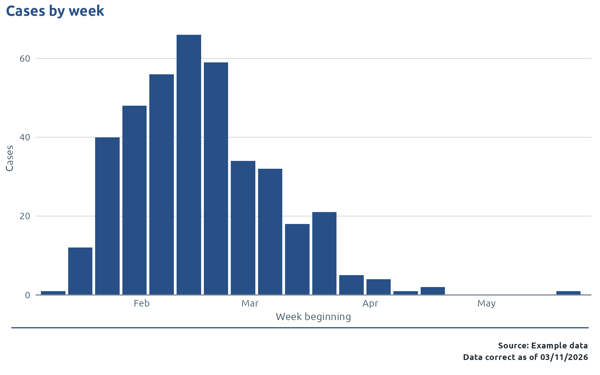
phw_save(fin, "epicurve.png")